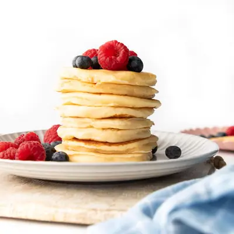

Yogurt Pancakes

Ingredients
- 1 cup (125g) all-purpose flour (plain flour)
- 1½ teaspoon baking powder
- ¼ teaspoon baking soda
- 1 cup (240g) yogurt (I used plain Greek yogurt)
- ¼ cup (60ml) milk (I used whole milk)
- 2 eggs
- 1 teaspoon vanilla extract
- unsalted butter / oil (for frying)
Steps
- In a large bowl, whisk together the flour, baking powder and baking soda.
- In a seperate bowl or jug, whisk together the yogurt, milk, vanilla, and eggs until smooth.
- Pour the wet ingredients into the dry ingredients and stir until just combined. Do not overmix, a few small lumps are fine.
- Heat a non-stick frying pan or griddle over medium heat. Lightly grease with a small amount of butter or oil, wiping away the excess with paper towel.
- Use an ice cream scoop (about ¼ cup) to add the batter into the pan and form into a circle. I cook 4 at a time.
- Cook for 1½ minutes or until bubbles form on the surface, then flip and cook for a further minute or until golden.
- Transfer cooked pancakes to a plate. Repeat with remaining batter.
- Serve with your favorite toppings.
Recipe by Healthy Little Foodies, from Healthy Little Foodies. Saved here for personal use; the original has the full notes, tips and photos. Open original